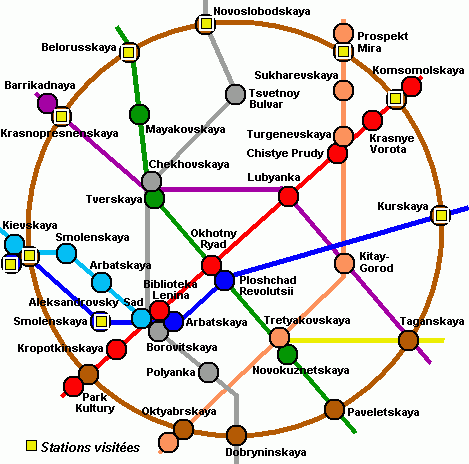

Le Métro de Moscou
limité à la ligne circulaire (42 stations)
cliquer sur les carrés jaunes pour voir les 9 stations visitées le 18/06/06
|

|
|
aperçu

|
Peu de villes au monde peuvent faire figurer leur métro dans la liste des attractions touristiques ou des monuments historiques. Avec leurs lustres,
leurs sculptures et leurs somptueuses mosaïques, les quais et les couloirs du métro moscovite, construit à l'époque de Staline, ressemblent à
des palais miniatures. Le réseau est, de plus, l'un des plus pfréquentés et des plus performants du monde. Longtemps les transports publics sont
restés très bon marché et l'on paye toujours le même prix quelle que soit la longueur du trajet de métro, mais il est question d'introduire des tarifs
variables.
Longueur totale des lignes: 278 km
Longueur de la ligne circulaire: 20 km
Distance moyenne entre stations: 1800 m (à Paris aucun point est à moins de 500 m d'une station de métro (urbain).
Vitesse commerciale moyenne: 42 km/h
Composition des rames: selon les lignes, 6, 7 ou 8 voitures.
Date de première mise en service: 15 mai 1935.
Métros identiques: dans de nombreuses villes de l'ex URSS ainsi qu'à Budapest et à Prague.